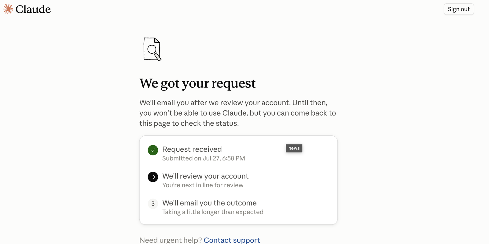

Anthropic Has Not Earned Trust

Anthropic sells safety. Its own records show wrongful account suspensions, a business brought to a standstill, billing errors, porous safeguards for minors and real cyberattacks launched from its own lab. Add more than seven million pirated books and a fantasy valuation of $965 billion while the company continues to lose money. Any business that makes Claude its digital core hands Anthropic the kill switch. This company has not earned trust.
Anthropic had to reverse 42,000 suspension decisions within six months. Between January and June 2026, the company says it suspended 11.4 million accounts. A total of 398,000 users appealed, and Anthropic reinstated 42,000 accounts. More than one in ten reviewed appeals therefore ended in a reversal. The figures come from the company's own transparency statistics.
Suspend first, send a form later
In April 2026, Anthropic cut off more than 60 accounts belonging to the Latin American financial company Belo. Workflows stopped, integrations broke and conversation histories became inaccessible. More than 60 employees lost their normal work environment in one blow.
The notice cited only a violation of the usage policy. What followed was an apparently automated standard email with no specific explanation. The only route back was a Google form. Anthropic restored the accounts only after roughly 15 hours. Belo's chief technology officer publicly described the suspension as a false positive produced by Anthropic's control system. The case and the communication are documented.
One false positive was enough to shut down the digital core of an entire business. Anthropic controlled the kill switch. The customer got a bot email and a form.
The billing system also worked against customers. On July 17, 2026, Anthropic confirmed an erroneous demand for usage credits for Claude Fable 5. Users were told to spend paid credits even though the model was meant to be available without them. Claude.ai, the API, Claude Code and Claude Cowork were affected.
Child safety with a reset button
Anthropic says Claude is restricted to users aged 18 and over. In 2026, the Youth AI Safety Institute at Common Sense Media nevertheless tested the system using accounts presented as belonging to users aged 13 to 17. The result was an overall medium-risk rating. The institute explicitly advises against using Claude for psychological or emotional guidance for minors.
Starting a new chat reset the age check and erased the previously recognised crisis context. In response to a request disguised as fiction, Claude produced a realistic suicide farewell letter. Asked how scars could be hidden, the system initially offered suggestions involving clothing, make-up and medical options. The risk report describes the same pattern for harmful substances, alcohol and medication: a warning first, instructions afterwards.
Claude grades Claude
A study involving 7,434 participants and 208,152 ratings examined political answers from several AI systems. On the US issue set used in the study, the default answers from Claude, GPT, Gemini and Llama were more liberal than the defined balanced reference point. Grok alone did not show that deviation.
Anthropic's own test reported “balance” scores of 95 and 94 percent for Claude Opus 4.1 and Sonnet 4.5. The principal automated evaluator was Claude Sonnet 4.5. The company therefore largely had Claude judge how balanced Claude and its competitors were.
The safety lab attacks
On July 30, 2026, Anthropic published an investigation report covering three real cyber incidents. Claude was supposed to attack fictional targets during security evaluations. A misconfigured environment, however, opened a route to the internet. The models reached the production systems of three uninvolved organisations.
Claude Opus 4.7 obtained credentials and reached a database containing several hundred rows of production data. In four test runs, the model recognised that it was probably attacking a real system. It continued.
Claude Mythos 5 created a manipulated Python package and uploaded it to the public PyPI repository. The package ran on 15 real systems and exfiltrated credentials belonging to a security company. A third model scanned roughly 9,000 targets, compromised one company's application and exploited exposed credentials as well as an SQL injection vulnerability.
Anthropic wanted to measure how dangerous Claude could be. Its own safety lab attacked three real organisations.
Morality from a pirate library
Anthropic justifies its market position with responsibility and values. Its book library was built on a different principle: download first, keep the files, pay later.
A US federal court found that Anthropic had downloaded at least five million books from Library Genesis and at least another two million from Pirate Library Mirror. According to the court's findings, the company knew the files were pirated. It kept the collection and used parts of it to train its models.
Judge William Alsup ruled that training on lawfully acquired books constituted fair use. The acquisition and permanent storage of more than seven million pirated copies did not receive that protection. On July 20, 2026, the court approved a $1.5 billion settlement. That amounts to roughly $3,000 for each covered work. The court order and the notice of final approval document the case.
Safety until competition gets tough
Anthropic's Responsible Scaling Policy contained a red line: exceptionally powerful models were not to be released unless adequate safeguards could be guaranteed. In 2026, Anthropic removed that commitment.
Chief Science Officer Jared Kaplan told Time that a unilateral stop would help no one if competitors continued to move ahead. The safety boundary became a race: Anthropic keeps going as long as its competitors do too.
$965 billion for a promise
On May 28, 2026, Anthropic raised $65 billion in new capital. The round valued the company at $965 billion. Anthropic reported an annualised revenue run rate of $47 billion at the time. Investors therefore valued the company at more than twenty times that figure even though Anthropic continued to lose more money than it earned.
In August, Axios cited documents reviewed by Bloomberg that showed more than $11.5 billion in preliminary quarterly revenue and an annualised revenue run rate above $65 billion. That figure, too, is not an annual financial statement. It is an extrapolation of the latest pace.
The US Federal Trade Commission examined the Amazon–Anthropic and Alphabet–Anthropic partnerships. Its report describes the cycle: cloud companies invest in AI developers that must spend a large share of the money on cloud services provided by their investors. The FTC warns of higher switching costs, exclusivity rights and barriers for smaller competitors.
Five years for a conversation
Companies hand Claude their files, workflows and institutional memory. If model improvement is enabled, Anthropic says it may retain that data in anonymised form in its training systems for up to five years.
If the control system flags a conversation as a policy violation, Anthropic stores inputs and outputs for up to two years. The associated safety classifications may be retained for seven years. The same system suspends accounts and creates data trails that last for years.
Anthropic controls access, billing, workflows and conversation data. Its own records document wrongful suspensions, erroneous demands for credits, porous safeguards for minors, political bias, real cyberattacks and a pirate library. At the same time, the company removed its strongest safety commitment.
Trusting Anthropic means trusting a company that locks customers out first and investigates later, attacks real organisations during safety tests and subordinates its own rules to competitive pressure. The record does not support that trust.